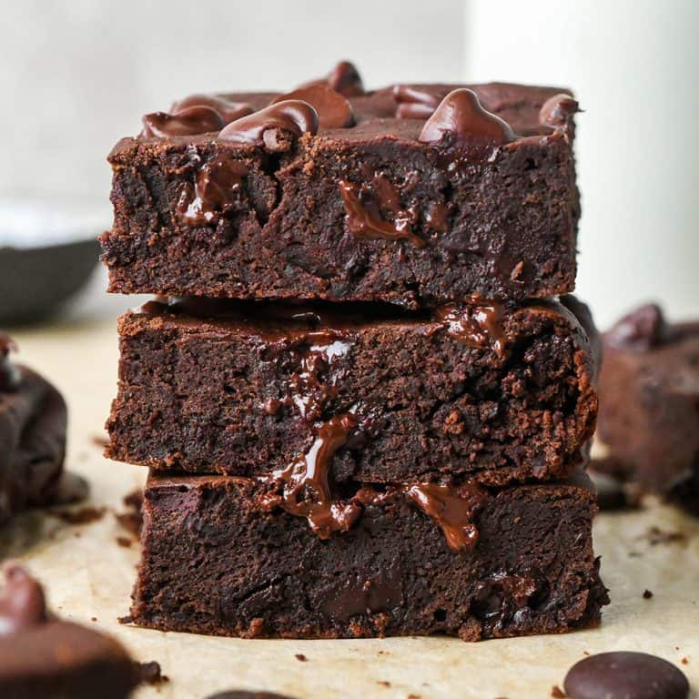

Brownies

Description
This recipe for brownies is simple and fast! Perfect for people looking for a delicious treat!
Ingredients
- Sugar
- All-purpose Flour
- Butter
- Eggs
- Cocoa Powder
- Vanilla
- Baking Powder
- Salt
- Walnuts (optional)
Ready to Become a Bonafide Baker?
Follow These Steps!
- Preheat your oven to 350 degrees (F).
- In a large mixing bowl, combine 2 cups sugar, 1 1/2 cups all purpose flour, 2 sticks melted butter, 4 eggs, 1/2 cup cocoa powder, 1 teaspoon vanilla extract, 1/2 teaspoon baking powder and 1/2 teaspoon salt until mixed fully.
- Leave mixture aside, and in your baking tray, cover surface with non-stick spray/butter or size and prepare parchment/wax paper.
- Spread brownie batter into prepared baking tray until evenly distributed.
- Place baking tray in preheated oven for 12-15 minutes, checking periodically until the top is dry and the edges have started to pull away from the sides of the pan.
- Let sit/cool for 20-30 minutes before slicing into squares; the brownie needs time to solidify after baking.
All done! Enjoy your treat!
More Recipes